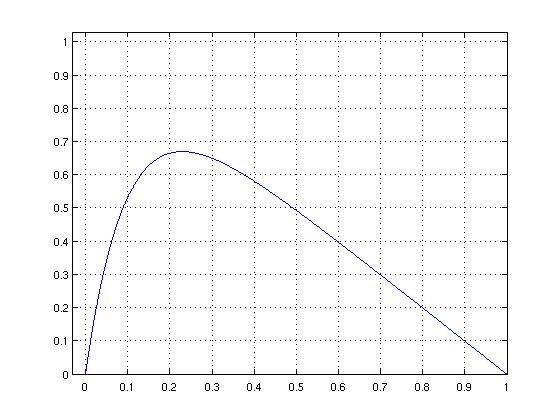
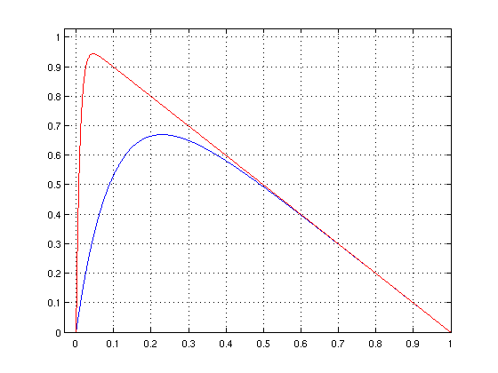
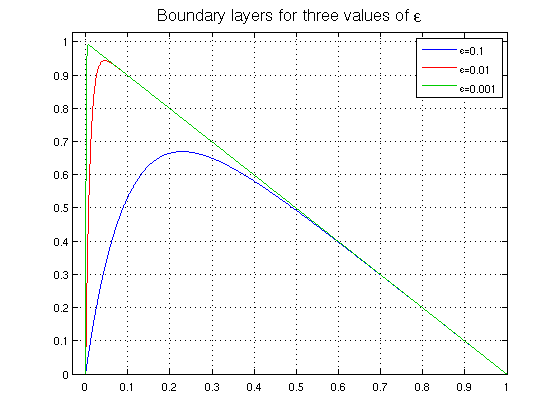
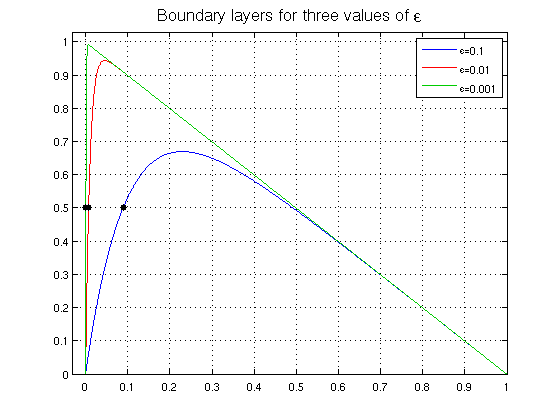
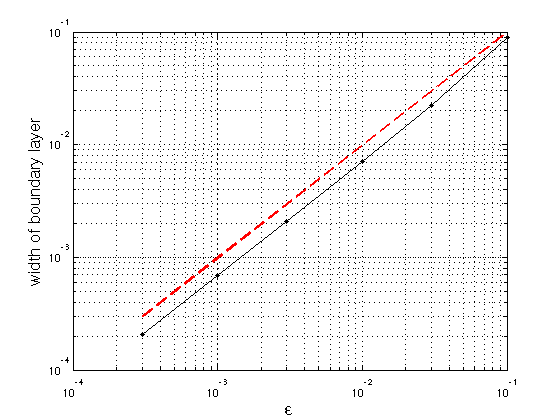

Boundary layer for advection-diffusion equation
Nick Trefethen, 22 October 2010
(Chebfun example ode/BoundaryLayer.m)
Consider the steady-state linear advection-diffusion equation
L_eps u = -eps u" - u' = 1, u(0) = u(1) = 0 ,
where eps is a small positive parameter. The solution to this equation has a boundary layer near x=0.
In Chebfun, we can define the eps-dependent operator like this:
dom = domain(0,1);
L = @(eps) -eps*diff(dom,2) - diff(dom) & 'dirichlet';
Note that since the operator L above is linear, we are defining it to be a linop. Another approach would be be to define a linear chebop as follows:
L2 = @(eps) chebop(@(u) -eps*diff(u,2)-diff(u),dom,0,0);
For eps=0.1 we get this picture:
u = L(0.1)\1; LW = 'linewidth'; lw = 1.6; clf, plot(u,'b',LW,lw) grid on, axis([-0.03 1 0 1.03])
Let's add a curve for eps = 0.01:
u = L(0.01)\1; hold on, plot(u,'r',LW,lw)
Here's eps = 0.001:
u = L(0.001)\1; hold on, plot(u,LW,lw,'color',[0 .8 0]) legend('\epsilon=0.1','\epsilon=0.01','\epsilon=0.001') FS = 'fontsize'; title('Boundary layers for three values of \epsilon',FS,16)
It can be shown that the width of the boundary layer for this equation is O(eps). Suppose we want to measure this in Chebfun. One method would be to find the point where the solution goes through 0.5. (This definition wouldn't work for larger eps.)
width = @(eps) min(roots(L(eps)\1-.5));
For example, here are the widths for the three curves just plotted:
format long
w = [width(.1) width(.01) width(.001)]
w = 0.088880675019131 0.007073961393037 0.000694537220660
Let's add these points to the plot:
MS = 'markersize'; plot(w,[.5 .5 .5],'.k',MS,18)
We can also plot boundary layer width against epsilon. The dashed red line confirms the linear behavior.
epsvec = [.1 .03 .01 .003 .001 .0003]; for j = 1:length(epsvec) w(j) = width(epsvec(j)); end clf loglog(epsvec,w,'.-k',LW,1.6,MS,16), grid on xlabel('\epsilon',FS,16) ylabel('width of boundary layer',FS,16) hold on, plot(epsvec,epsvec,'--r',LW,2)